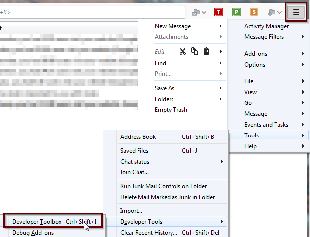
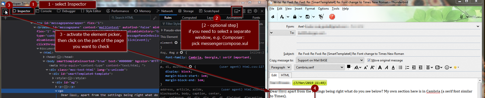
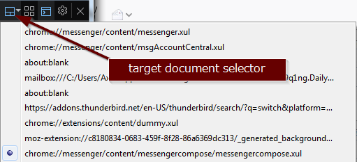
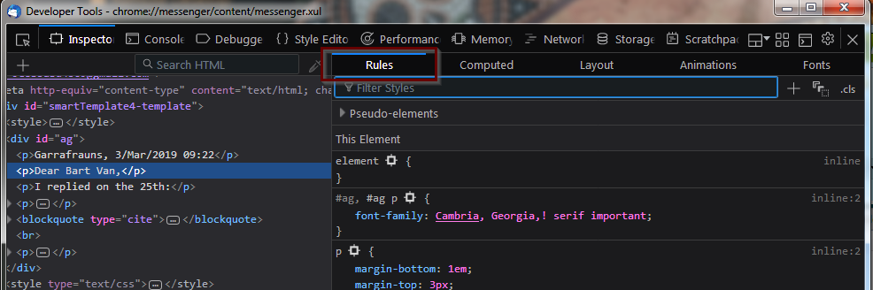
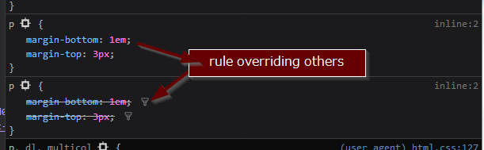
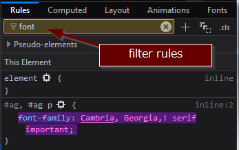
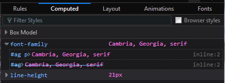
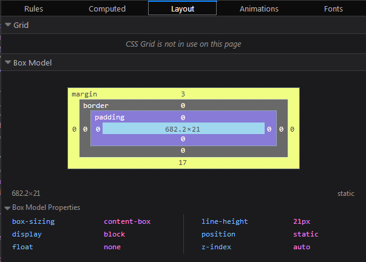

SmartTemplates :: knowledgebase :: Inspector
troubleshooting fonts and layout
Sometimes when composing / reading emails, fonts or colors do not turn out as expected. This is hard to troubleshoot for us but you can use the built in tools of Thunderbird to investigate.
If you need to find out what causes the font "look" on
a specific section in your emails, open Tools / Developer Tools > Developer Toolbox on
the Thunderbird main menu (or press CTRL+SHIFT+I):

(1) Next, click on the "inspector" tab:

(2) optional step - you only need this if you want to click
in Composer or a separate "single message window" - select a
target document. By default this is the mail 3pane
(messenger.xul). To investigate the composer window, pick messengercompose.xul

(3) Pickeruse this to select what you are interested in with your mouse. regions of interest will be highlighted with a red frame.
(4) Click on the writing on the page in composer / preview
On the left of Inspector, you see the "document tree" - the different parts that make up your email - click any element to select a different paragraph which will be highlighted on screen
On the right hand of the screen you can select different views:
Rules
this shows all style rules that apply to the selected element

If a rule is overridden by another, it will be "crossed out":

You can filter for specific rules with the "Filter Styles" box on top:

You can try out other values by double-clicking the values of ach rule and then typing over.
Make sure to transfer the new rules to your template.
Computed Styles
Shows only the styles that "survive" in the hierarchy of styles

Layout
This section deals mainly with positioning of the element on
screen:

Flagset by Matthias Slovig under CC, see: http://flags.blogpotato.de/
Fugue Icons (or based on) by Yusuke Kamiyamane under CC, see: http://p.yusukekamiyamane.com/
Noia Icons (or based on) by Carles Carbonell Bernado under LGPL, see: http://carlitus.deviantart.com/